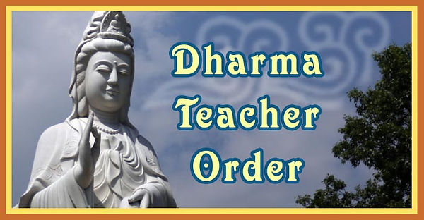

.svg.png)

Dharma Classes
After our weekly chanting and meditation services, and a short break, we have an opportunity to reflect on the Dharma, check in with each other, and share how our practice is going:
- Sunday mornings around 10:15 a.m. and
- Wednesday evenings around 7:15 p.m.
You can participate in the chanting service virtually on Facebook Live, and afterwards join the Dharma discussion via Google Meet.
- Google Meet code: iba-ndpg-qrs
- Join via phone call: (567) 316-0607 PIN: 879 127 142#
Those who are not able to participate in-person at the temple are invited to join us online using Google Meet. Accessing the class via web browser or app requires a Google account (audio or video). You can also access the class from any phone (audio only). Please contact David for more information or to receive instructions on how to join the class.
If you would like to receive regular emails for announcements, program planning, and Dharma discussions, please visit our Google Group page and follow the instructions when you "Ask to join group." It will look like this:

Dharma Teacher Order
"The Dharma Teacher Order is a group of monastics and lay people who follow the Vietnamese Zen (Thien) Buddhist tradition and are interested in:
- Learning more about the Dharma (Buddha's teachings)
- Developing our spiritual practices and
- Making the Dharma available to the Western Hemisphere.
Please Note: DTO classes are held via Zoom and combine students from all participating sanghas. Our temple will continue to host a class that joins Zoom together for those who want to gather in person.
Q. Who can participate?
A. Everyone is invited to attend and participate in our services, presentations, and special events. There are no special requirements to audit, and we welcome all who want to learn more about the Buddha's teachings and practices.
Q. Do participants earn a certificate?
A. For those who are interested, students completing all four years of study (and associated requirements) can receive a Certificate of Buddhist Studies. Students who complete a fifth+ year of study may be eligible to receive ordination as a Lay Dharma Teacher in the DTO.
Q. How much does the program cost?
A. Annual tuition is $150, plus retreat costs; we also welcome and encourage students to donate what they are able to when possible to support the program. We make it easy to donate online here, or through many of the donation boxes at the temple. All donations by students support costs related to the program, including temple upkeep, retreat costs, and program materials. If you make an online donation through PayPal, please add a note that the donation is "for DTO". If a check is placed in a physical donation box, please write "DTO" on the bottom of the check.
Q. What about books?
A. Students are also responsible for purchasing their own books, many of which can be found used or at your local library. Please ask us for more help if you have trouble with finding or paying for these books. A full list of the books currently used during all four years of study is available at the DTO website.
Q. What happens during a typical class session?
A. We encourage all students to prepare for class through chanting and meditation. You can practice at home, or join the Texas or Missouri sanghas (in-person or online) on Saturday morning before class. Classes begin at noon and conclude by 3 pm. From 12 to 1:15 pm, a student then makes a presentation on the content of our reading assignment. We then take a personal break, followed by walking meditation. We return to class at 1:45 for a facilitated discussion on the material, concluding with announcements. Presentations are made by our students, with support from DTO mentors.
Q. How can I keep up to date about the classes?
A. For more information, visit the Dharma Teacher Order website or contact David. Thank you!